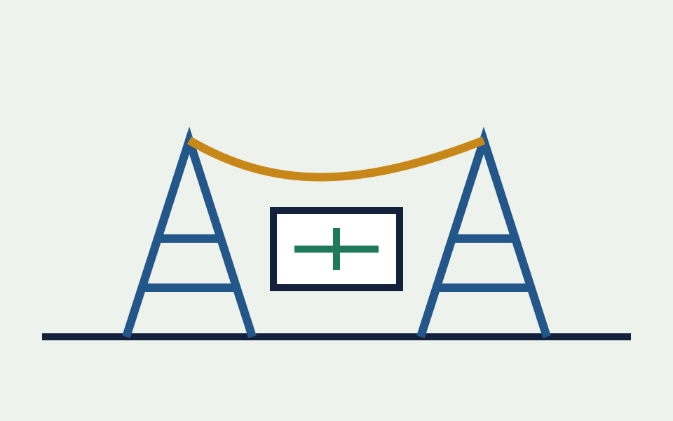

PV + BESS / System Design
珀斯港口光伏及储能系统设计 PV and Battery Energy Storage System Design for Perth Harbour
在 4 人团队中负责 939 kWp 光伏系统和 1164.8 kWh 储能系统设计与经济分析，目标是解决高电价地区峰值负荷问题。 In a four-person team, I contributed to the design and economic analysis of a 939 kWp PV system and a 1164.8 kWh BESS, targeting peak-load challenges in a high-electricity-price area.
- 使用 PVsyst 完成 3D 建模和损失分析，系统近端遮挡损失控制在 -0.8%。 Used PVsyst for 3D modelling and loss analysis, controlling near-shading loss to -0.8%.
- 完成 1.20 DC/AC 比优化，项目内部收益率 IRR 达 30.83%。 Optimised the DC/AC ratio to 1.20, with project IRR reaching 30.83%.
- 配置 1708 块双面组件与 26 台逆变器，论证 BESS 对峰值削减和电网支撑的作用。 Configured 1708 bifacial modules and 26 inverters, demonstrating BESS value for peak shaving and grid support.